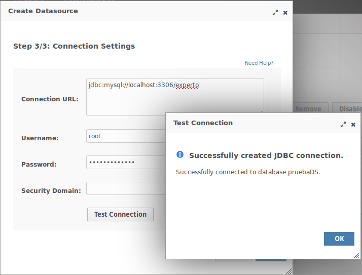

Servidores Web y PaaS
Sesión 2: Administración de recursos en WildFly
Índice
- Bootstrap
- Estructura de los ficheros de configuración
- Configuración de recursos
- Datasources
- Contenedor de EJB's
- Descriptores de despliegue
- Classloading
- Compresión GZIP
Bootstrap
$JBOSS_HOME/bin/standalone.conf
JAVA_OPTS="-XX:MaxPermSize=256m -Xms64m -Xmx512m"
JDK 8
JAVA_OPTS="-XX:MaxMetaspaceSize=256m -Xms64m -Xmx512m"
Ficheros de configuración
- Para cada modo de inicio existen varias configuraciones predefinidas
- Se almacenan en ficheros XML dentro de la carpeta de la modalidad correspondiente
- Modalidad standalone:
- standalone.xml y standalone-full.xml
- standalone-ha.xml y standalone-ha-full.xml
./standalone.sh -c standalone-full.xml
Estructura de un fichero de configuración
Profiles
- Son configuración del servidor y sus subsistemas
- Múltiples profiles por tipo de servidor en managed domain.
...
...
Estructura de un fichero de configuración
Extensions
- La mayor parte de las funcionalidades de WildFly se configuran como extensiones que implementan especificaciones de Java EE.
[...]
<extension module="org.jboss.as.transactions"/>
<extension module="org.jboss.as.web" />
<extension module="org.jboss.as.webservices" />
<extension module="org.jboss.as.weld"/>
Estructura de un fichero de configuración
Paths
- Son rutas a directorios o ficheros de la máquina a las que se les asocia un nombre lógico.
- Pueden ser absolutas o relativas
<path name="log.dir" path="/home/wildfly/logs" />
<file relative-to="log.dir" path="server.log"/>
Estructura de un fichero de configuración
Interfaces
- Nombre lógico asociado a un nombre de máquina/dirección IP a través de la cual podemos acceder a nuestro servidor. Por defecto:
- management La dirección que se utilizará para atender peticiones de administración.
- public Esta es la dirección de servicio que atenderá el acceso a las aplicaciones.
- unsecure Esta es la dirección que se utilizará para la invocación de objetos remotos IIOP.
<inet-address value="${jboss.bind.address.management:127.0.0.1}"/>
Estructura de un fichero de configuración
Interfaces
<inet-address value="${jboss.bind.address:127.0.0.1}"/>
<inet-address value="${jboss.bind.address.unsecure:127.0.0.1}"/>
Sobreescribir variables:
$ ./standalone.sh -Djboss.bind.address=192.168.1.100
Estructura de un fichero de configuración
socket bindings group
- Es la definición de un punto de escucha y se compone de una interfaz y un puerto de red.
- El parámetro port-offset permite variar automáticamente el puerto si se desplieguan múltiples instancias.
<socket-binding name="management-http" interface="management" port="${jboss.management.http.port:9990}"/>
<socket-binding name="management-https" interface="management" port="${jboss.management.https.port:9993}"/>
<socket-binding name="ajp" port="${jboss.ajp.port:8009}"/>
<socket-binding name="http" port="${jboss.http.port:8080}"/>
<socket-binding name="https" port="${jboss.https.port:8443}"/>
Estructura de un fichero de configuración
System properties
- Tres formas:
En el fichero de configuración:
<property name="x" value="/opt/db/common"/> - En el script de arranque standalone.sh/domain.sh
Por línea de comandos, parámetro -D
./standalone.sh -Dpropiedad=true
Estructura de un fichero de configuración
» Edición de los ficheros de configuración
Edición desde las herramientas de administración
- Backup de configuraciones
Edición desde CLI
- Navegación por directorios con autocompletar.
- Recargar configuración en caliente con reload
Edición desde consola Web
- Aplicación Web ligera autogenerada a partir de la propia configuración.
Edición desde consola Web
- Notificación de cambios

Edición manual de los ficheros
Con mucho cuidado...
» Configuración de recursos
Acceso a base de datos
- Los pool de conexiones permiten acelerar la conexión a base de datos de las aplicaciones.
- Propiedades más importantes:
- Min Pool Size/Max Pool Size
- Strict Minimum
- Prefill Enabled
- Flush Strategy
- Idle Timeout
Instalación del driver MySQL como módulo
Crear directorio del módulo
JBOSS_HOME/modules/system/layers/base/com/mysql/driver/main- Copiar el fichero .jar a la carpeta del módulo
Crear el descriptor module.xml en la carpeta del módulo
<resource-root path="mysql-connector-java-5.1.33.jar"/> <module name="javax.api"/> <module name="javax.transaction.api"/>
4. Añadir el driver al fichero standalone.xml subsistema datasources
<driver name="mysql" module="com.mysql.driver"/>
<driver-class>com.mysql.jdbc.Driver</driver-class>
Alternativa: Copiar el driver a la carpeta deployments. WildFly le asignará un nombre en el arranque del servidor.
Creación de un datasource (I)
Creación de un datasource (II)

Creación de un datasource (III)

Creación de un datasource (IV)

Desplegar un datasource como deployment
- Crear un descriptor [nombre]-ds.xml con uno o varios datasources.
- Misma estructura que el subsistema datasources.
- No recomendado en producción (no se puede administrar).
Desplegar un datasource como deployment
<?xml version="1.0" encoding="UTF-8"?>
jdbc:mysql://localhost:3306/experto
com.mysql.jdbc.Driver
mysql-connector-java-5.1.31-bin.jar_com.mysql.jdbc.Driver_5_1
root
expertojavajs
false
false
false
Incluir datasources en aplicaciones
| Tipo aplicación | Ubicación |
|---|---|
| Web App (.war) | WEB-INF |
| EJB (.jar) | META-INF |
| Enterprise (.ear) | META-INF (fichero principal) |
Solución a las password en plano
Encriptar la password mediante librería PicketBox
$ cd /usr/local/wildfly-8.2.1.Final/modules/system/layers/base/org/picketbox/main $ java -classpath picketbox-4.0.21.Final.jar org.picketbox.datasource.security.SecureIdentityLoginModule expertojavajs Encoded password: -46cea3eadea6ff81c9c59e773c1cfb95Definir security-domain asociado a las credenciales en standalone.xml
<module-option name="username" value="root"/> <module-option name="password" value="-46cea3eadea6ff81c9c59e773c1cfb95"/> <module-option name="managedConnectionFactoryName" value="jboss.jca:service=LocalTxCM,name=portalDS"/>
Solución a las password en plano
3. Asociar el security-domain al datasource
ds-encrypted
Configuración del contenedor de EJB's
Implementan lógica de negocio en aplicaciones Java EE
El servidor de aplicaciones maximiza el rendimiento de estos componentes.
Tipos:
- Stateless Session Beans
- Stateful Session Beans
- Message Driven Beans
SFSB y SLSB instanciables internamente desde la aplicación o externamente mediante Remoting (RMI)
Pool de EJB's
- Los EJB's tienen un ciclo de vida dentro del servidor de aplicaciones.
- WildFly permite mantener un número de instancias de un objeto para adaptarse a la carga de trabajo.
- El mecanimo de pooling no aplica a los stateful session beans.
- Pools por defecto: mdb-strict-max-pool y slsb-strict-max-pool (deshabilitado por defecto)
Activación del pool slsb-strict-max-pool
<bean-instance-pool-ref pool-name="slsb-strict-max-pool"/>
Definir un pool personalizado
Mediante CLI, crear un pool de hasta 5 objetos
[standalone@localhost:9990 /] /subsystem=ejb3/strict-max-bean-instance-pool=nuevo-pool:add(max-pool-size=5,timeout-unit=SECONDS,timeout=30)
El resultado:
....
<strict-max-pool name="nuevo-pool" max-pool-size="5" instance-acquisition-timeout="30" instance-acquisition-timeout-unit="SECONDS"/>
....
Definir un pool personalizado
- Asociar una definición de pool a un EJB:
@Stateless
@Pool (value="nuevo-pool")
public class Ranking implements RankingLocal
...
Descriptores de despliegue
- Java Enterprise introduce dos formas de especificar aspectos de configuración dentro de una aplicación:
- Anotaciones en el código.
- Descriptores de despliegue.
- Cada servidor de aplicaciones introduce características propias que se configuran mediante descriptores y anotaciones específicos.
- La documentación de WildFly es manifiestamente mejorable con respecto a otros servidores.
ClassLoading
WildFly carga las clases que necesita una aplicación con la siguiente prioridad:
- Dependencias del sistema: Librerías que implementan la especificación Java EE.
- Dependencias de usuario, especificadas en el manifest o a través del fichero jboss-deployment-structure.xml
- Recursos locales: WEB-INF/classes_ o WEB-INF/lib de una aplicación WAR.
- Dependencias compartidas: Librerías dentro de una aplicación EAR.
Módulos
- Permiten compartir recursos entre diferentes aplicaciones
- Dos formas de definirlos:
- Estáticos: integrados en la configuración del servidor y accesibles por todas las aplicaciones
- Dinámicos: desplegados en la carpeta deployments, referenciables como deployment.[nombre del fichero]
- Fichero MANIFEST.MF
Dependencies: deployment.WebExample1.war
Rendimiento de un servidor de aplicaciones
El mejor rendimiento de un servidor de aplicaciones se consigue ajustando su configuración a los recursos disponibles y la carga de trabajo que va a soportar
Compresión GZIP
- Permite ahorrar hasta el 90% del tiempo de transmisión de recursos estáticos no comprimidos.
- Funcionalidad ya conocida desde hace años.
- Con las modernas aplicaciones JavaScript cobra mayor importancia.
<buffer-cache name="default" buffer-size="1024" buffers-per-region="1024" max-regions="10"/>
<http-listener name="default" socket-binding="http"/>
<location name="/" handler="welcome-content" />
<filter-ref name="gzipFilter" predicate="path-suffix['.css'] or path-suffix['.js']" />
<filter-ref name="server-header"/>
<filter-ref name="x-powered-by-header"/>
<jsp-config/>
<file name="welcome-content" path="${jboss.home.dir}/welcome-content" directory-listing="true"/>
<esponse-header name="server-header" header-name="Server" header-value="Wildfly 8"/>
<response-header name="x-powered-by-header" header-name="X-Powered-By" header-value="Undertow 1"/>
<gzip name="gzipFilter"/>